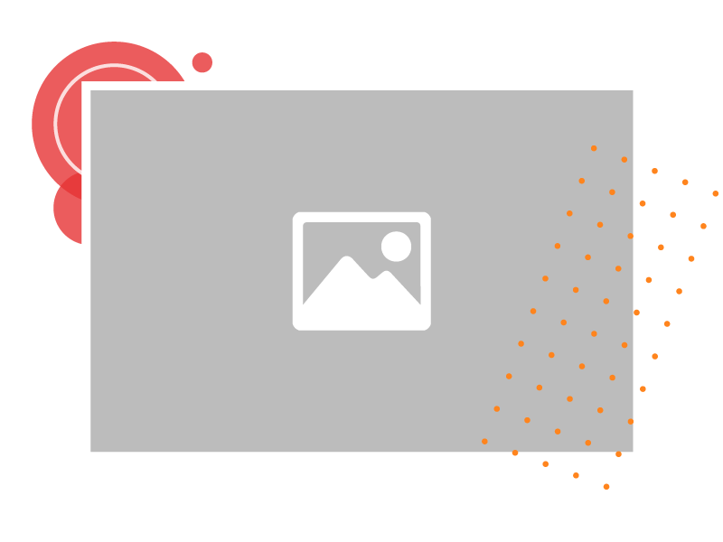
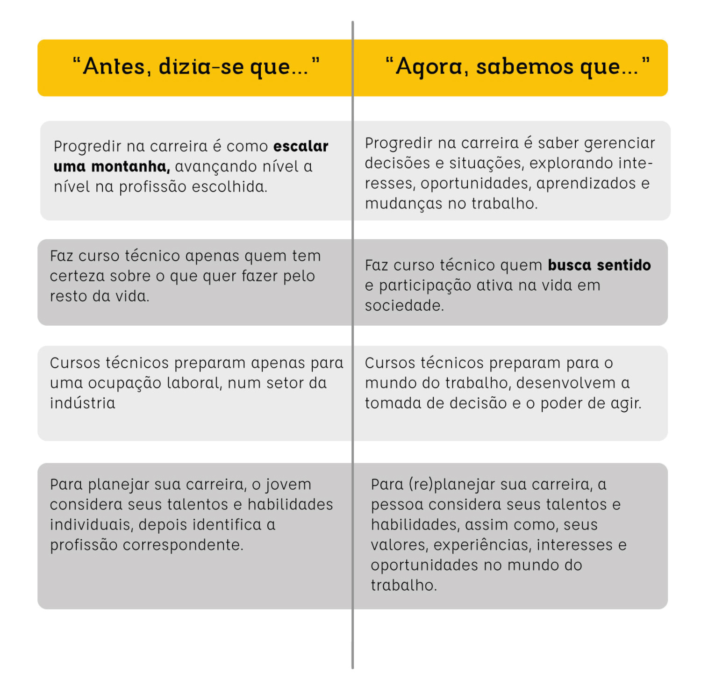

Internet e inteligência artificial

Figura 01 - Fonte: figura feita pela equipe gráfica do projeto.
Nossa relação com o mundo do trabalho e a forma como se trabalha mudou muito nas duas últimas décadas. Isso acarreta incertezas e pode provocar medo em relação aos fatores que impulsionam a transformação.
Cultura da impermanência
Diversidade e Meio ambiente
Mais do que “desaparecer”, as profissões estão passando por mudanças! Isso impacta os modos de formação. Cada vez mais, educação e trabalho estão entrelaçados. As carreiras não são escolhidas num único momento; são modeladas através de uma série de decisões tomadas em diferentes momentos. As pessoas, tanto jovens quanto adultas, são levadas a ajustar ou redesenhar seu projeto de carreira ao longo da vida.
Listamos aspectos que têm marcado a transformação da ideia de carreira, nas últimas décadas.

Figura 10 - Fonte: figura feita pela equipe gráfica do projeto.
Material Complementar